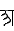
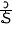

Kēlen is a constructed alien language created by Sylvia Sotomayor. Among some other interesting linguistic concepts Kēlen also uses three different writing sytems: A regular script, a box script and a "ceremonial interlace alphabet".
I was intruiged by these writing systems and especially the interlace alphabet. This page attempts to automatically translate romanized Kēlen into these writing systems.
You can find out all about Kēlen at https://www.terjemar.net/kelen/kelen.php. Please refer to those pages for any information on the language, its creator or the back story. On this page below the interactive part you can only find a short excerpt about the alphabet, the elements there are clickable so you can easily input your Kēlen string regardless of what keyboard layout you are using.
Traditionally, Kēlen claims five stops (ansāorīki anpōhi). They are written thus:
| p (japōha japiēxa) | or |
| t (japōha japīra) | |
| s (japōha jaxīwa) | |
| c (japōha jūsne) | or |
| k (japōha jakōλa) | or |
There are the five fricatives (ansāorīki ankōrji) to complement the five stops:
| w (jakōrja japiēxa) | or  or |
| þ (jakōrja japīra) | |
| x (jakōrja jaxīwa) | |
| j (jakōrja jūsne) | or or |
| h (jakōrja jakōλa) | or or |
Then the fourteen sonorants (ansāorīki antāni):
| m (jahīña japiēxa) | and mm (jahīña japiēxa jōma) | ||||
| n (jahīña japīra) | and nn (jahīña japīra jōma) | ||||
| ñ (jahīña jūsne) | and ññ (jahīña jūsne jōma) | ||||
| ŋ (jahīña jakōλa) | and ŋŋ (jahīña jakōλa jōma) | ||||
| l (jatāna) | and ll (jatāna jōma) | |
and λ (jatāna jūsne) |  | |
| r (jatāna jarūsa) | and rr (jatāna jarūsa jōma) | and rj (jatāna jarūsa jūsne) |
The vowels come in short and long:
| i | and ī | ||
| e | and ē | ||
| a | and ā | ||
| o |  | and ō | |
| u | and ū |
The diphtongs also come in short and long:
| ae | and āe | ||
| ao | and āo | ||
| ie | and iē |
The vowel y, which occurs in Eastern Kēlen, is usually written the same way as i .
Punctuation consists of a
to mark spaces between words (this is optional),
and a (;) to mark the end of clauses or sentences.
is the equivalent of
selnirre anlāsa sū-lānōraen; "We (1p-paucal) give you (2p-plural) welcome at(to) Lānōraen."
Kēlen alphabetical order was finalized before the writing system existed in its current form. Not all of the letters above are included. Those that aren't officially included are unofficially included with other letters. For example, the alphabetical order does not distinguish between and , putting them both under . I have put extra letters in brackets next to the letters they are listed with.
{ }
{}
{}
{}
{}
{}
{ }
{}
{}
{}
{ }
{}
{}
{ }
{ }
{ }
{ }
Children have been known to recite the following rhyme:
ā, ē, ō,
ī, iē, ū,
lā, ñē, tō,
nā, kā, þō,
mū, cē, sū,
pāo, wē, jē,
rā, xō, hē.
The romanization, being for us humans, has a different alphabetical order than the native Kēlen script. The romanization is alphabetized like so:
a, ā, ae, āe, ao, āo, c, e, ē, h, i, ī, ie, iē, j, k, l, ll, λ, m, mm, n, nn, ñ, ññ, ŋ, ŋŋ, o, ō, p, r, rr, rj, s, t, þ, u, ū, w, x
| a | ñ | e | l |
o
|
i | ie |
| k | u | n | t | th | m | p |
| w | s | c | j | x | h | r |